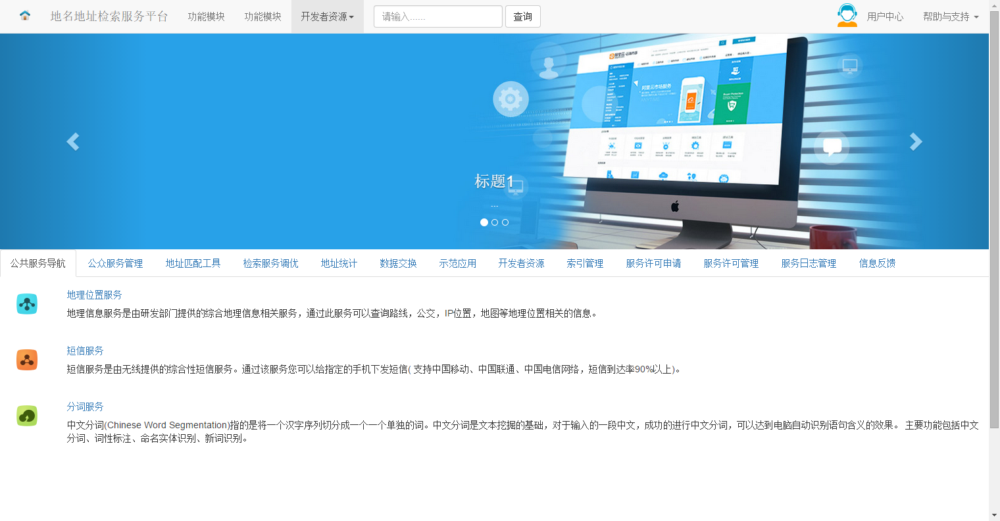

基于BackBone.Marionette和Bootstrap的示例
Marionette-bootstrap-samples
View on GitHub
Download .zip
Download .tar.gz
Marionette-Bootstrap-Startup
test
基于BackBone.Marionette和Bootstrap的示例
部署于tomcate/iis等web服务器运行
效果图
